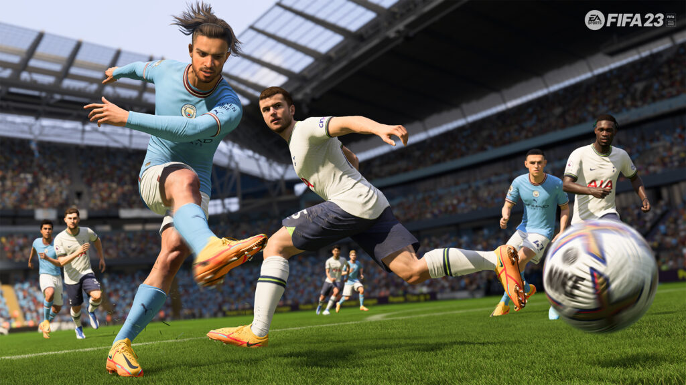
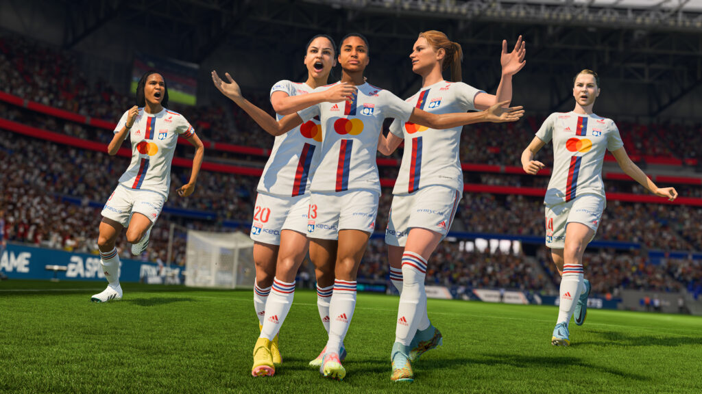
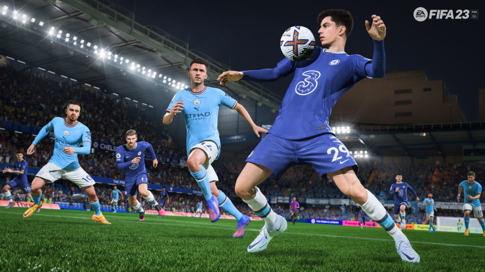

FIFA 23 | REVIEW
El deporte más popular del mundo, en el Juego de Todos
De la mano de Electronic Arts, desde CDF Gaming hemos tenido el placer de acceder a una versión completa de FIFA 23. Esta tan esperada entrega que ayuda a calmar un poco la ansiedad mundialista tuvo su fecha de lanzamiento oficial el 30 de septiembre en PlayStation 4; PlayStation 5; Xbox Series X|S; Xbox One; Nintendo Swith; y PC. Es la primera edición que contará con cross-play disponible para jugadores de la misma generación de consolas.
Intentar realizar una introducción al mundo FIFA sería casi imposible por el impacto que ha tenido en el mundo del gaming y en la cultura futbolera en general, marcando generaciones que han crecido año a año con las nuevas entregas y han visto cómo ha evolucionado este universo casi tan apasionante como el fútbol real. Pero este año no es como cualquier otro para los amantes del deporte. Este es un año mundialista, ¿acaso el último de Messi y Cristiano Ronaldo?
Como no podía ser de otra manera, esta será la edición más grande de FIFA hasta ahora. Tendremos no una, sino dos Copas del Mundo: la Copa del Mundo masculina Qatar FIFA 2022TM y la Copa Mundial Femenina de la FIFA Australia/Nueva Zelanda 2023TM, cada una con su respectiva actualización post lanzamiento para que la fiebre mundialista sea total. Asimismo, se agregan ligas de fútbol femenino como la Barclays FA Women’s Super League (WSL) y la Division 1 Arkema (D1F).
La inclusión del fútbol femenino no abarca únicamente la inclusión de competiciones, sino que también tiene a Sam Kerr, jugadora del Chelsea, compartiendo la tapa de esta entrega con una de las estrellas del PSG, Kylian Mbappé.
Junto con la nueva y mejorada versión de Hypermotion 2, se presentan cambios en la jugabilidad que son importantes a destacar:
- Tiros potentes: un nuevo tipo de tiro más potente, pero que demora más en el remate y requiere más precisión de ejecución
- Jugadas de táctica fija rediseñadas: ahora se puede definir el punto exacto donde se impactará el balón, dando mayor o menor efecto y elevación al disparo, tanto en los tiros libres como de esquina
- Regate técnico: un nuevo sistema de regate que hace que girar y regatear se sientan más responsivos
- Aceleración: Divide la aceleración de los jugadores en tres tipos: Explosiva; Controlada; y, Prolongada
FIFA Ultimate Team también ha entrado dentro del paquete de modificaciones y renovaciones en este año. El sistema de química ha sido completamente modificado, con la eliminación de la química total de la plantilla y el foco en la química individual de cada jugador. Ya no es necesario que los jugadores estén en posiciones cercanas para hacer química entre sí, pero sí deberán estar ubicados en su posición preferida para poder tener química con sus compañeros de equipo.
También se ha agregado la modalidad Momentos dentro de FUT, en la que se jugarán situaciones breves y divertidas, cumpliendo ciertos objetivos para obtener estrellas que luego podrán utilizarse en la tienda especial de Momentos para poder adquirir items y sobres.
Por el lado del modo Carrera, el jugador podrá elegir entre uno de los 3 tipos de personalidad disponibles: Indomable; Bastión; y Todoterreno, tomando parte en actividades diversas para obtener puntos de mejora y moldear al jugador a su medida.
Al ser un año mundialista, la presión que ha tenido Electronic Arts para entregar un FIFA a la altura de lo que se espera ha sido inmensa. Sin embargo, no han dejado que eso nuble su juicio ni los limite a la hora de explorar mejoras e innovar en los distintos modos de juego, lo que ha resultado en un FIFA 23 que supera las expectativas. Los cambios en la jugabilidad han sido realmente exitosos logrando un realismo aún mayor, particularmente en las jugadas a balón parado. La creciente inclusión del fútbol femenino va de la mano con el enorme crecimiento que viene teniendo el deporte en los últimos años y esperamos que siga haciéndolo en el futuro. Desde CDF Gaming estamos ansiosos por ver qué traen para las Copas del Mundo, sabemos que esto recién comienza y el camino del Juego de Todos es largo y emocionante.